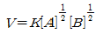
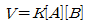
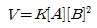
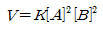
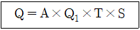
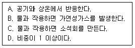

위험물산업기사 (2002-03-10 기출문제)
1과목: 일반화학
1. 다음 중 성분원소는 같으나 모양이나 성질이 맞지 않는 것은?
- 산소와 오존
- 적린과 황린
- 흑연과 다이아몬드
- 물과 과산화수소
(정답률: 55%)

2. SiO2의 특성 중 틀리는 것은?
- 무색투명한 육방정계에 속한다.
- 안정한 화합물로서 산에는 잘 녹는다.
- 수정, 석영, 마노, 규사 등의 주성분이다.
- 고체의 수산화칼륨과 함께 가열하여 물유리의 원료인 규산나트륨을 만든다.
(정답률: 51%)
3. 혼합물의 분리 방법 중 액체의 용해도를 이용하여 미량의 불순물을 제거하는 방법은?
- 증류
- 증발
- 재결정
- 추출
(정답률: 40%)
4. KMnO4에서 Mn의 산화수는 얼마인가?
- 3
- 5
- 7
- 9
(정답률: 82%)
5. 0.5M-HCl 100mL와 0.1M-NaOH 100mL를 혼합한 용액의 pH는 얼마인가?
- 0.5
- 0.6
- 0.7
- 0.8
(정답률: 37%)
6. C2H5OH(에탄올)을 빨갛게 달군 구리선을 넣어 산화시킬 때 생성되는 물질은?
- CH3OCH3
- CH3CHO
- HCOOH
- C3H7OH
(정답률: 60%)
7. 어떤 원자핵 반응에서 방출된 에너지 (원자력)가 9× 1018 erg 였다면, 새로운 원자핵을 이룰때 생긴 질량 결손은 얼마인가?
- 10-1(g)
- 10-2(g)
- 10-3(g)
- 10-4(g)
(정답률: 40%)
8. C3H8 22g을 완전 연소시켰을때 필요한 공기의 부피는 얼마 인가? (단, 공기중의 산소량은 21%이다.)
- 56L
- 112L
- 224L
- 267L
(정답률: 43%)
9. 다음 반응 중 수소를 발생하지 않는 반응은?
- 철과 묽은 황산
- 소금물의 전기분해
- 은과 묽은 황산
- 알루미늄과 수산화나트륨
(정답률: 35%)
10. 다음 반응속도식에서 2차 반응인 것은?




(정답률: 54%)
11. 카니자로(cannizzaro)반응에서 생성되는 물질은?
- 카르복실산과 케톤
- 카르복실산과 알코올
- 알코올과 에스테르
- 알코올과 물
(정답률: 40%)
12. 차가운 탄산음료수의 병마개를 뽑으면 거품이 솟아 오르는 이유는?
- 수증기가 생기기 때문이다.
- 이산화탄소가 분해하기 때문이다.
- 용기 내부압력이 줄어들면 용해도가 줄기 때문이다.
- 온도가 내려가게 되어 포화 용해도가 줄기 때문이다.
(정답률: 83%)
13. 다음 중 알칼리금속 원소로만 짝지어진 것은?
- Al 과 Be
- Na 과 Mg
- Sr 과 Ca
- Li 과 K
(정답률: 71%)
14. 다음 중 황화수소(H2S)를 통하면 노란색 침전으로 되는 것은?
- Cd(NO3)2
- Cu(NO3)2
- Bi(NO3)2
- Pb(NO3)2
(정답률: 38%)
15. 다음 지시약중 산성용액에서 색깔을 나타내지 않는 것은?
- 메틸오렌지
- 페놀프탈레인
- 페놀레드
- 티몰블루
(정답률: 66%)
16. 같은 조건하에서 다음 기체들을 동시에 확산시킬때 확산 속도가 가장 빠른 것은?
- CO2
- CH4
- NO2
- SO2
(정답률: 51%)
17. 물분자들 사이에 작용하는 수소결합에 의해 나타나는 현상과 관계가 없는 것은?
- 물의 기화열이 크다.
- 물의 끓는점이 높다.
- 무색 투명한 액체다.
- 얼음이 물위에 뜬다.
(정답률: 64%)
18. 다음 물질 중에서 은거울 반응과 요오드포름 반응을 모두 할 수 있는 것은?
- CH3OH
- C2H5OH
- CH3CHO
- CH3ClOCH3
(정답률: 67%)
19. 100mL 메스플라스크로 10ppm용액 100mL를 만들려고 한다. 1000ppm용액 몇 mL를 취해야 하는가?
- 1
- 2
- 9
- 10
(정답률: 57%)
20. 다음의 할로겐 원소 중에서 산화제로 사용될 때 산화력이 가장 큰 원소는?
- F2
- Cl2
- Br2
- I2
(정답률: 57%)
2과목: 화재예방과 소화방법
21. 산,알칼리 소화약제의 화학반응식으로 바른 것은?
- 2NaHCO3 + H2SO4→ Na2SO4 + 2CO2 + 2H2O
- 2CCI4 + CO2→2COCI2
- 2K + 2H2O → 2KOH + H2
- 2Na + 2C2H5OH→ 2C2H5ONa + H2
(정답률: 64%)
22. 인화성액체 위험물의 화재 진압방법에 관한 설명으로 잘못된 것은?
- 케톤류, 에스테르류 등의 위험물에는 알콜형포를 방사한다.
- 화재발생 탱크의 위험물을 인접한 빈 탱크로 파이프라인 등을 통해 이송시킨다.
- 위험물의 비중에 관계없이 물에 의한 소화는 화재 면적을 확대시키므로 부적당하다.
- 높은 인화점을 갖거나 휘발성이 낮은 위험물을 저장하고 있는 탱크나 용기의 화재는 외부벽에 주수하는 것이 효과가 있다.
(정답률: 47%)
23. 다음 중 가연물의 구비조건으로 볼 수 없는 것은?
- 열전도율이 클 것
- 연소열량이 클 것
- 화학적 활성이 강할 것
- 활성화 에너지가 적을 것
(정답률: 63%)
24. 소방대상물이 어느층에 있어도 당해 층의 옥내소화전을 동시에 사용할 경우 각 소화전의 노즐선단에서 방수압력이 몇 kg/cm2 이상이어야 하는가?
- 1.2kg/cm2 이상
- 1.5kg/cm2 이상
- 1.7kg/cm2 이상
- 1.9kg/cm2 이상
(정답률: 29%)
25. 다수인이 모일수 있는 공공의 장소(중요 문화재)의 연면적이1,000m2 일 경우 비치하는 소화기구의 능력단위는 얼마 이상이어야 하는가?
- 10 단위
- 20 단위
- 30 단위
- 40 단위
(정답률: 52%)
26. 분말 소화약제의 제1종 분말이란?
- 탄산수소칼륨을 주성분으로한 분말
- 탄산수소나트륨을 주성분으로한 분말
- 인산염을 주성분으로한 분말
- 탄산수소칼륨과 요소가 화합된 분말
(정답률: 68%)
27. 스프링 클러헤드는 소방대상물의 폭이 얼마 이하인 경우 스프링 클러헤드를 소방대상물의 실내 측벽에 설치할 수 있는가?
- 5m
- 7m
- 9m
- 11m
(정답률: 42%)
28. 분말 소화약제의 저장용기의 충전비는 얼마 이상으로 하는가?
- 0.8
- 0.6
- 0.4
- 0.2
(정답률: 47%)
29. 화재예방상 소방신호로 맞지 않는 것은?
- 경계신호
- 발화신호
- 훈련신호
- 통신신호
(정답률: 46%)
30. 다음 약품 중 소화제로 사용되지 않는 것은?
- 탄산칼슘
- 탄산수소나트륨
- 황산알루미늄
- 탄산수소칼륨
(정답률: 35%)
31. 정전기의 제거 방법이 아닌 것은?
- 공기를 이온화 한다.
- 전기음성도 차가 작은 물질의 접촉
- 습도를 낮춘다.
- 접지를 한다.
(정답률: 65%)
32. 지정수량이 10배 이상인 제조소에 위험물을 저장.취급 하는 데 적합하지 않은 설비는?
- 휴대용메거폰
- 비상방송설비
- 자동화재탐지설비
- 무선통신 보조설비
(정답률: 47%)
33. 특수가연물인 가연성액체류의 화재시 소화설비의 적응성에 맞지 않는 것은?
- 스프링클러설비
- 이산화탄소설비
- 포소화설비
- 인산염류설비
(정답률: 51%)
34. 객석 유도등을 수평로 부분에 설치하고자 한다. 이 때 객석의 통로 직선부분의 길이가 100m 이고 중심선에서의 조명도가 0.2 룩스일때, 설치해야 할 유도등의 개수는?
- 24
- 20
- 15
- 10
(정답률: 26%)
35. 포 소화설비에서 포소화약제 저장량(고정포방출방식)은 다음 공식으로 구한다. 각 기호가 의미하는 것이 틀린 것은?

- A는 탱크의 액표면적(m2)을 나타낸다.
- T는 방출시간(분)을 나타낸다.
- S는 포소화약제의 접결구 수를 나타낸다.
- Q1은 단위 포 소화수용액의 양(ℓ /m2)을 나타낸다.
(정답률: 44%)
36. 수동펌프식 물소화기에 대한 설명이 잘못된 것은 ?
- 흡수밸브에는 여과망이 설치되어 있다.
- 공기실은 물을 연속으로 방사하기 위한 가압실이다.
- 냉각작용에 의해 소화하며 일반화재에 사용된다.
- 핸들을 상하로 움직이면 실린더내의 물이 흡수밸브를 통해 공기실로 들어 간다.
(정답률: 47%)
37. 유류화재의 예방대책이 아닌 것은?
- 가솔린 등 인화성이 높은 물질은 용도에 맞게 사용한다.
- 열기구는 사용 중 다른 장소로 이동하지 않는다.
- 석유난로에 주전자를 올려 놓을 때는 물이 끓어 넘치는가 주의한다.
- 적당한 용량의 전기제품을 선택하여 사용한다.
(정답률: 48%)
38. 피난기구의 설치위치로 적당하지 않은 것은?
- 많은 사람의 눈에 쉽게 보일 수 있는 위치
- 거실의 각 부분으로부터 직접 복도로 쉽게 통할수 있어야 한다.
- 미끄럼대는 안전한 강하속도를 유지 할것
- 쉽게 열리고 큰 개구부를 가진 창
(정답률: 47%)
39. 옥내소화전설비에 관한 설명으로 틀린 것은?
- 물올림장치 - 펌프 및 흡입측 배관의 공기고임 방지
- 릴리프밸브의 작동압력 - 체절압력 이상의 압력
- 충압펌프 - 급수배관의 정상적인 누설에 대비
- 순환배관 - 체절운전시 수온상승방지
(정답률: 32%)
40. 가연성고체 위험물의 화재시 소화방법으로 가장 적당하지 않는 것은?
- 적린과 유황은 물에 의한 냉각소화를 한다.
- 금속분, 철분, 마그네슘이 연소하고 있을 때에는 절대로 주수하지 아니한다.
- 금속분, 철분, 마그네슘, 황화린은 마른 모래, 건조 분말 등으로 질식소화한다.
- 금속분, 철분, 마그네슘의 연소시에는 수소가 발생 하므로 충분한 안전거리를 확보한다.
(정답률: 42%)
3과목: 위험물의 성질과 취급
41. 과염소산 칼륨과 제 2류 위험물이 혼합되는 것은 대단히 위험하다. 그 이유가 타당한 것은?
- 전류가 발생하고 자연발화 되기 때문이다.
- 혼합하면 과염소산 칼륨이 불연성물질로 바뀌기 때문 이다.
- 가열 충격 및 마찰에 의하여 착화 폭발하기 때문이다
- 혼합하면 용해되기 때문이다.
(정답률: 68%)
42. 다음중 황분말과 혼합했을때 폭발의 위험이 있는 것은?
- 소화제
- 산화제
- 가연물
- 환원제
(정답률: 50%)
43. 제3류 위험물인 금속칼륨 및 금속나트륨을 저장한 곳에 화재예방을 위해서 준비해야 할 것은?
- 건조한 소금과 탄산칼슘
- 깨끗한 물
- 포말소화기
- 습기 많은 모래
(정답률: 47%)
44. 다음 위험물질을 혼합후 점화원 또는 충격을 가했을때 발화나 폭발위험이 없는 것은?
- 황린과 물
- 적린과 염소산칼륨
- 히드라진과 아질산염류
- Acetylene 과 은
(정답률: 58%)
45. 아래에 표시한 성질과 물질의 조합으로 옳은 것은?

- K - A.B.C
- Ca3P2 - B.C.D
- Na - A.C.D
- CaC2 - A.B.D
(정답률: 50%)
46. 다음 위험물에 화기를 직접, 접근시켜도 위험이 없는 것은?
- Mg 분
- CS2
- P4S3
- CaO
(정답률: 39%)
47. 다음은 금속칼륨과 물이 반응하여 생성되는 현상을 나타낸 것이다. 옳은 것은?
- 산화칼륨 + 수소 + 발열반응
- 산화칼륨 + 수소 + 흡열반응
- 수산화칼륨 + 수소 + 흡열반응
- 수산화칼륨 + 수소 + 발열반응
(정답률: 51%)
48. 다음 물질 중 인화점이 가장 낮은 것은?
- 에테르
- 이황화탄소
- 아세톤
- 벤젠
(정답률: 41%)
49. 에테르중의 과산화물을 검출할때 그 검출시약과 정색 반응의 색이 알맞게 짝지워진 것은?
- 요오드화 칼륨 - 적색
- 요오드화 칼륨 - 황색
- 브롬화 칼륨 - 황색
- 브롬화 칼륨 - 적색
(정답률: 49%)
50. 질산의 성질로 틀 린 것은?
- 무색투명하며 공업용은 황색을 띤다.
- 금,백금을 제외한 모든 금속과 반응하여 질산염을 생성한다.
- 햇빛에 분해되고 적갈색 가스는 인체에 유독하다.
- 환원성 물질이나 유기물질 등과 반응하여 부동태가 된다.
(정답률: 48%)
51. 4류 위험물을 취급할때 주의해야 할 사항 중 틀 린 것은?
- 통풍이 잘되고 찬 곳에 저장한다.
- 증기는 낮은 곳에 체류하기 쉬우므로 환기에 주의 한다.
- 석유류는 전기의 양도체이므로 정전기가 잘흐르도록 한다.
- 빈용기라 할지라도 가연성 증기가 남아 있으므로 취급에 주의한다.
(정답률: 73%)
52. 니트로 셀룰로오즈의 저장 및 취급상 틀린 것은?
- 열을 멀리하고 찬곳에 저장한다.
- 햇빛이 잘드는 곳에 저장한다.
- 알코올로 습면하고 안정제를 가하여 저장한다.
- 타격, 마찰을 하지 않는 곳에 저장한다.
(정답률: 73%)
53. 다음 위험물을 취급할때 특히 화기에 주의 하여야 할 것은?
- NH4NO3
- (C6H5CO)2O2
- NaClO4
- MgO2
(정답률: 46%)
54. 제3류 위험물의 일반적인 성질에 해당되는 것은?
- 나트륨을 제외하고 물보다 무겁다.
- 황린을 제외하고 모두 물에 대하여 위험한 반응을 초래하는 물질이다.
- 유별이 다른 위험물과는 일정한 거리를 유지하는 경우 동일한 장소에 저장할 수 있다.
- 위험물 제조소에 청색바탕에 백색 글씨로 "물기주의"를 표기한 주의사항 게시판을 설치한다.
(정답률: 48%)
55. 위험물 취급시 유의사항으로 옳지 않은 것은?
- 시안화칼륨은 취급시 흡입하지 않토록에 주의하여야 한다.
- 모든 위험물 취급시 환풍이나 통풍을 시켜서는 안된다.
- 산을 취급할 때는 몸에 닿지 않도록 한다.
- 위험물이 있는 작업장 내에서는 흡연을 삼가한다.
(정답률: 78%)
56. 위험물의 운반용기 및 포장의 외부에 표시하는 방법중 수납된 위험물에 따른 주의사항으로서 틀 린 것은?
- 염소산 염류 ---- 화기 주의
- 제2류 위험물 ---- 화기 주의
- 셀룰로이드류 ---- 화기 엄금
- 제6류 위험물 ---- 물기 엄금
(정답률: 62%)
57. 다음 제2류 위험물인 황화린에 대한 설명 중 옳지 않은 것은?
- 황화린은 P4S3, P2S5, P4S7 세종류가 있으며, 미립자는 기관지 및 눈의 점막을 자극한다.
- 삼황화린은 과산화물, 과망간산염, 황린, 금속분과 혼합되면 자연발화할 수 있다.
- 모든 황화린은 공기 중에서 연소하여 황화수소 가스를 발생한다.
- 황화린은 소량의 경우 유리병에 저장하고, 대량의 경우 양철통에 넣은 후 나무상자에 보관한다.
(정답률: 43%)
58. 지하 저장탱크를 2개 설치하려고 한다. 이 때 탱크 사이를 몇 m 간격으로 설치할 경우 액체 위험물이 새는 것을 검사하기 위한 누유검사관을 공유할 수 있는가?
- 0.5m 이상 0.8m 이하
- 0.5m 이상 1.0m 이하
- 1.0m 이상 1.5m 이하
- 1.0m 이상 2.0m 이하
(정답률: 42%)
59. 다음 중 과산화칼륨과 물이 접촉할 때 일어나는 반응은 어느 것인가?
- 수소를 발생시킨다.
- 산성반응을 일으킨다.
- 산소를 발생시킨다.
- 가연성 가스가 발생하므로 위험하다.
(정답률: 54%)
60. 유지 1g을 비누화하는데 필요한 KOH의 mg수를 무엇이라 하는가?
- 비누화값
- 요오드값
- 세탄값
- 옥탄값
(정답률: 61%)